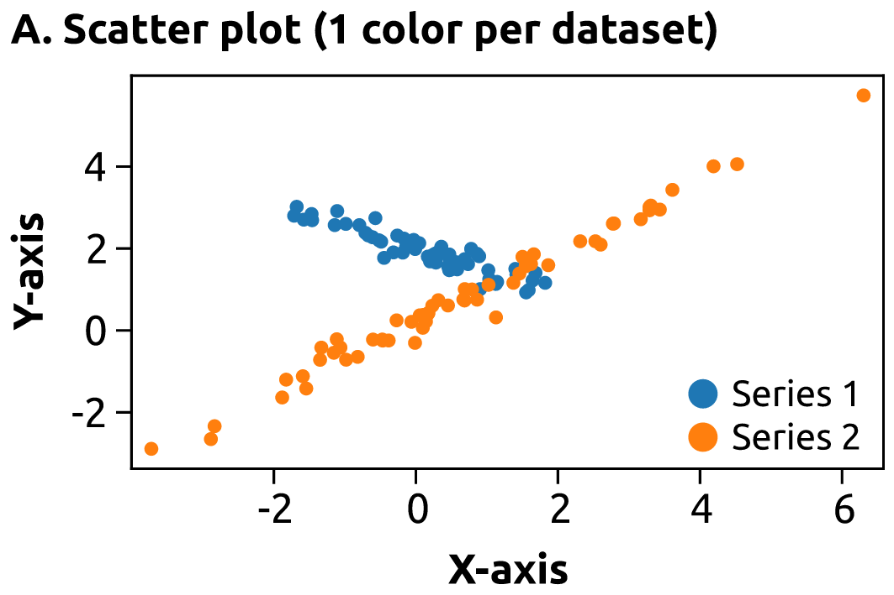
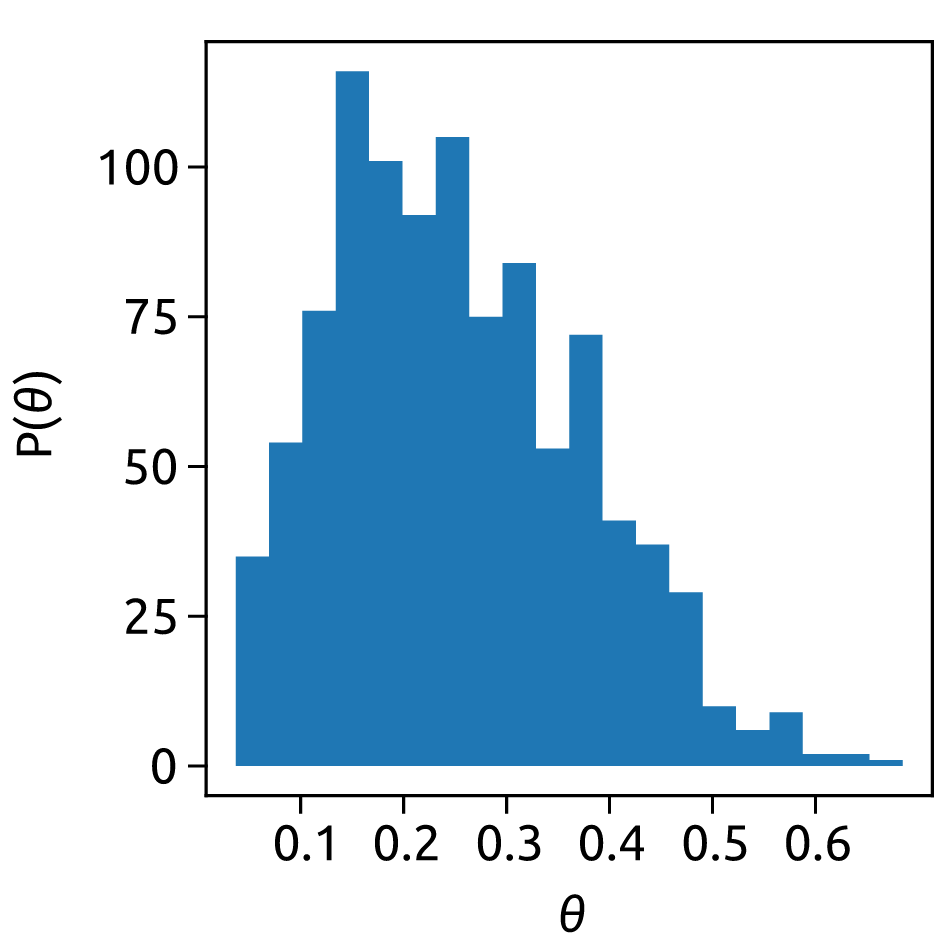
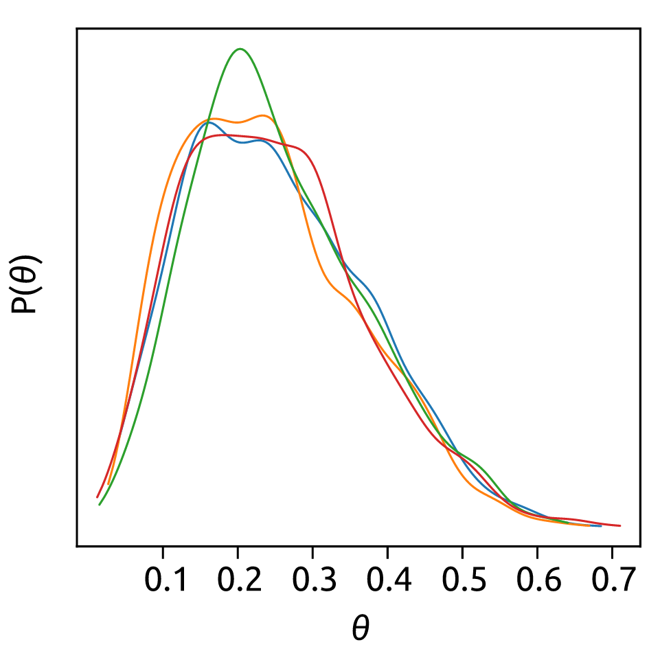
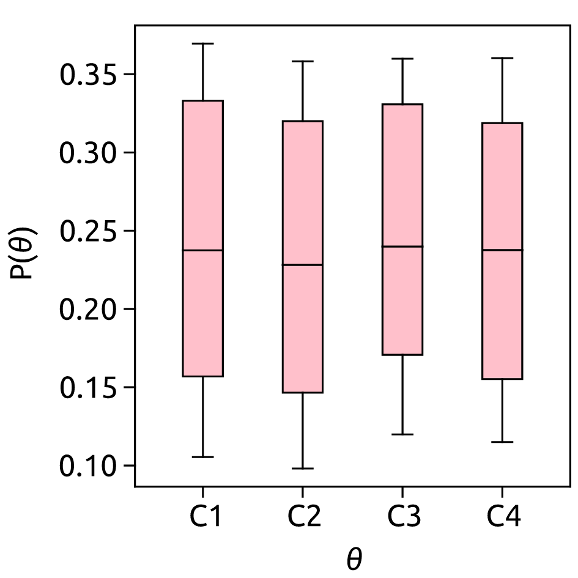

Plot types
Overview of many common plotting commands provided by Quartz.
Pairwise data
Plots of two variables, relating an x variable in the horizontal axis to a y variable in the vertical axis.

Scatter plot
Plots a number of (x, y) points.
Statistical distributions
Plots of the distribution of at least one variable in a dataset. Some of these methods also compute the distributions.

Histogram
Plot a distribution of numbers divided into discrete bins

Continuous distribution
Plot a continuous distribution of numbers using a Kernel density estimation (KDE)

Box and whiskers plot
PSummarize a distribution of numbers as a box and whiskers plot
Gridded data
Visualize data regularly spaced on a grid.
Contour plot
Plot the isolines from a real-valued function on a grid
Irregularly gridded data
TODO
3D and volumetric data
TODO